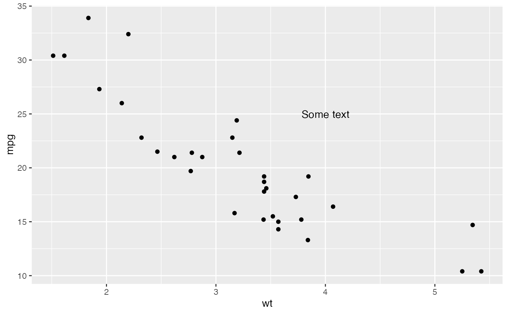
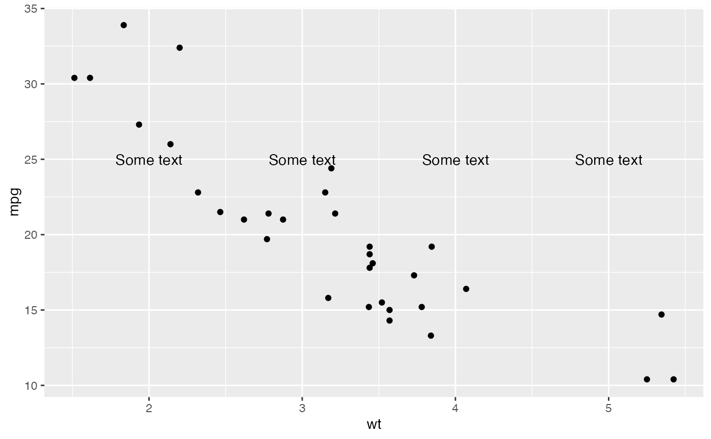
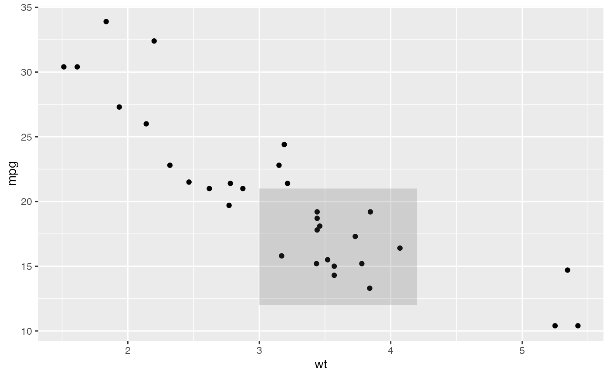
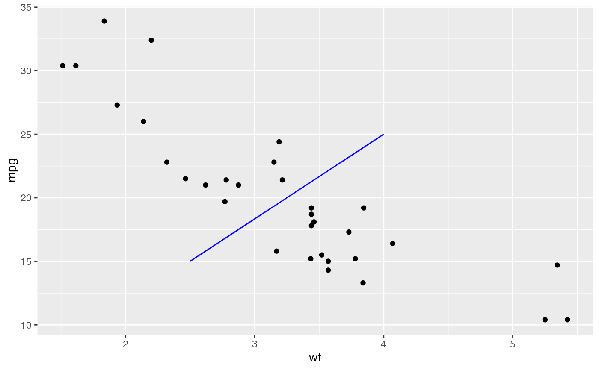
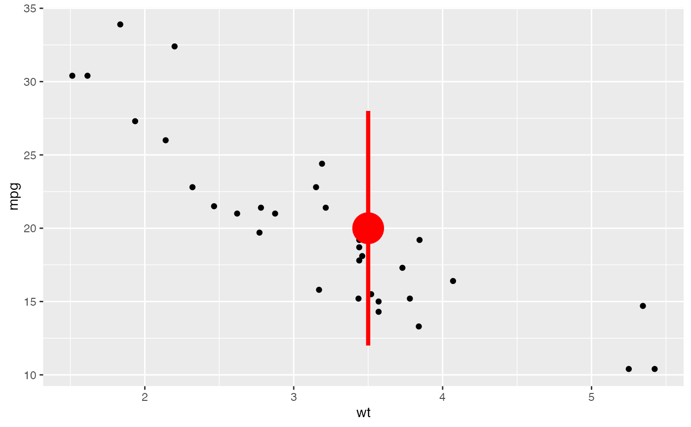
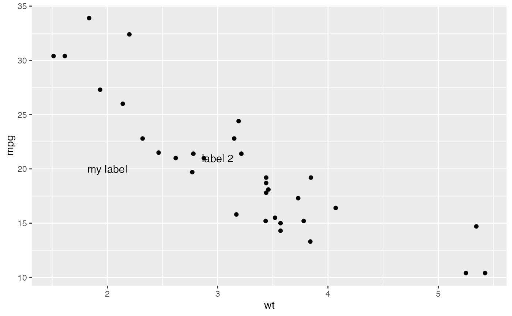
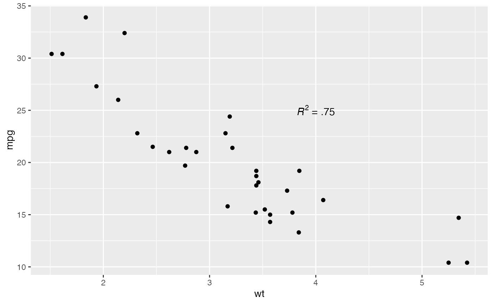

This function adds geoms to a plot, but unlike a typical geom function, the properties of the geoms are not mapped from variables of a data frame, but are instead passed in as vectors. This is useful for adding small annotations (such as text labels) or if you have your data in vectors, and for some reason don't want to put them in a data frame.
gf_annotate(
object,
geom = "text",
x = NULL,
y = NULL,
xmin = NULL,
xmax = NULL,
ymin = NULL,
ymax = NULL,
xend = NULL,
yend = NULL,
...,
na.rm = FALSE
)a gg object
name of geom to use for annotation
positioning aesthetics - you must specify at least one of these.
Other arguments passed on to layer()'s params argument. These
arguments broadly fall into one of 4 categories below. Notably, further
arguments to the position argument, or aesthetics that are required
can not be passed through .... Unknown arguments that are not part
of the 4 categories below are ignored.
Static aesthetics that are not mapped to a scale, but are at a fixed
value and apply to the layer as a whole. For example, colour = "red"
or linewidth = 3. The geom's documentation has an Aesthetics
section that lists the available options. The 'required' aesthetics
cannot be passed on to the params. Please note that while passing
unmapped aesthetics as vectors is technically possible, the order and
required length is not guaranteed to be parallel to the input data.
When constructing a layer using
a stat_*() function, the ... argument can be used to pass on
parameters to the geom part of the layer. An example of this is
stat_density(geom = "area", outline.type = "both"). The geom's
documentation lists which parameters it can accept.
Inversely, when constructing a layer using a
geom_*() function, the ... argument can be used to pass on parameters
to the stat part of the layer. An example of this is
geom_area(stat = "density", adjust = 0.5). The stat's documentation
lists which parameters it can accept.
The key_glyph argument of layer() may also be passed on through
.... This can be one of the functions described as
key glyphs, to change the display of the layer in the legend.
If FALSE, the default, missing values are removed with
a warning. If TRUE, missing values are silently removed.
Note that all position aesthetics are scaled (i.e. they will expand the limits of the plot so they are visible), but all other aesthetics are set. This means that layers created with this function will never affect the legend.
Due to their special nature, reference line geoms geom_abline(),
geom_hline(), and geom_vline() can't be used with annotate().
You can use these geoms directly for annotations.
The custom annotations section of the online ggplot2 book.
p <- gf_point(mpg ~wt, data = mtcars)
p |> gf_annotate("text", x = 4, y = 25, label = "Some text")

p |> gf_annotate("text", x = 2:5, y = 25, label = "Some text")

p |> gf_annotate("rect", xmin = 3, xmax = 4.2, ymin = 12, ymax = 21,
alpha = .2)

p |> gf_annotate("segment", x = 2.5, xend = 4, y = 15, yend = 25,
colour = "blue")

p |> gf_annotate("pointrange", x = 3.5, y = 20, ymin = 12, ymax = 28,
colour = "red", size = 2.5, linewidth = 1.5)

p |> gf_annotate("text", x = 2:3, y = 20:21, label = c("my label", "label 2"))

p |> gf_annotate("text", x = 4, y = 25, label = "italic(R) ^ 2 == 0.75",
parse = TRUE)
p |> gf_annotate("text", x = 4, y = 25,
label = "paste(italic(R) ^ 2, \" = .75\")", parse = TRUE)
